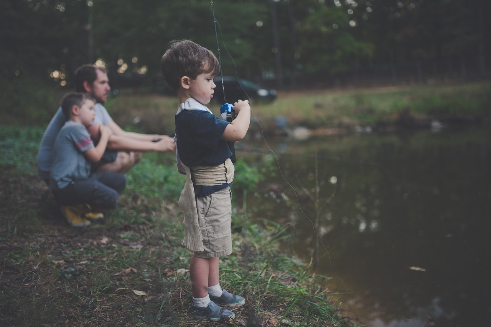
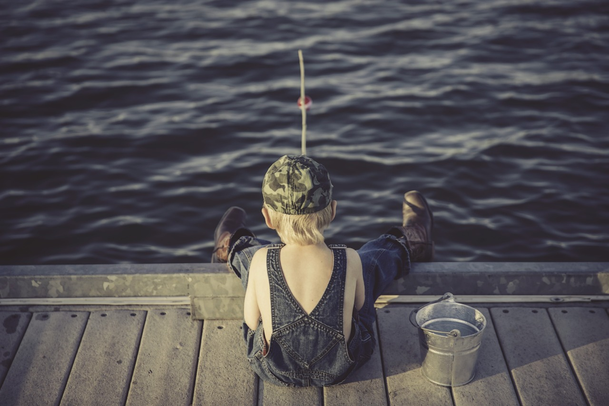

The Joy of Fishing: A Family Tradition
Fishing is more than just a hobby for me; it's a passion that brings me peace and happiness, especially when I share it with my son, who is 6 years old. Teaching him how to fish is one of my favorite activities. It's not just about catching fish; it's about creating memories and sharing the tranquility that fishing brings to our lives.
I've always loved fishing. For me, sitting by the water, waiting for a catch, is the perfect way to relax and think about life. It's like meditation, a time when I can clear my mind and enjoy the simplicity of nature. Whether it's the gentle sound of water, the serene environment, or the thrill of a catch, fishing provides a unique escape from the hustle and bustle of everyday life.
We often go fishing in various lakes across Lake and McHenry counties. These places are special to me because they remind me of my own childhood. My dad taught me to fish when I was very young, passing down a tradition that I now share with my son. This connection to my past makes each fishing trip even more meaningful.
Our family vacations to Cable, Wisconsin, are the highlight of every summer. Cable is one of my favorite places to fish in the country. The clear waters and abundant fish make it an ideal spot for both experienced anglers and beginners like my son. It's here that I hope to teach him not just the techniques of fishing, but also the patience, persistence, and appreciation for nature that come with it.
Fishing is a bond that ties my family together, a tradition that I'm proud to pass on to my son. It's a way for us to disconnect from technology and connect with each other and the world around us. Each trip to the lake is an adventure, a lesson, and a moment of peace, all rolled into one. As my son grows, I look forward to many more days spent by the water, sharing the joys of fishing and the lessons of life.